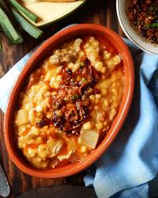

Guisados
guiso de lentejas tradicional :
El guiso de lentejas tiene un origen españo. Dicho plato, por cierto es rico, barato y muy abundante, comenzó a hacerse entre el Siglo XIX y XX.
Ingredientes :
°200 gr. de lentejas pardinas .
°120 gr. de chorizo fresco .
°1 zanahoria
1 cebolla mediana .
°2 dientes de ajo .
°Aceite de oliva o Aceite de girasol .
°Pimentón y especias a gusto .
°1 litro de agua .
°1 hoja de laurel .
°Sal a gusto
Preparacion :
°Dejar las lentejas en remojo.
°Picar los ajos, que queden chiquitos, y luego verterlos en la cacerola .
°Picar la cebolla.
°Pelar la zanahoria y luego cortarla para que queden pedacitos pequeños.
°Poner una cacerola en la ornalla, a fuego medio.
°Poner aceite en la cacerola.
°Dentro de la cacerola, insertar el ajo y la cebolla.
°Luego, ingresar la zanahoria .
°Cortar el chorizo y luego insertarlo para que la preparación vaya tomando gusto.
°Introducir el pimentón y las especias a gusto. Luego, revolver.
°Introducir las lentejas y rehogarlas unos minutos.
°Agregar agua para hervir las lentejas e ir controlando la cocción. En caso de que falte agua, agregarle más.
°Tapar la cacerola para que se conserve el calor y se puedan hervir las lentejas.
°Luego de 20 o 30 minutos, retirar la cacerola del fuego .
°¡Listo! Ya podés comer un delicioso guiso de lentejas .

Locro Criollo :
Ingredientes :
°250g. de porotos blancos.
°250g. de maíz blanco partido.
°1 chorizo colorado.
°1 chorizo criollo.
°Cuerito de cerdo.
°Pechito de cerdo.
°Falda.
°200g. de panceta.
°3 cebollas.
°2 cebollas de verdeo.
°1 puerro .
°1/2 calabaza.
°1/2 morrón rojo (para la salsita).
°Condimentos: sal, pimienta, comino, pimentón, ají molido, orégano.
Peparacion :
° Con un dia de anterioridas picar en vastones finos las verduras y poner en agua junto con el maiz y los porotos.
° Cortar la carne en cubos .
° Hervir el choriso criello y el colorado en dos ollas distintas alrededor de 15 min. para degasar.
° En una olla caliente colocar la panceta para que largue su grasa, luego agregar la cebolla de verdeo, el puerro, sal, aceite de oliva y saltear todo.
° Una vez blandito agregar el chorizo colorado, los cueritos de cerdos, el chorizo, el maíz pisado blanco y los porotos blancos (ambos bien escurridos previamente) y agregar agua (la cual no tiene que ser en las que estaban las verduras).
° Tapar y dejar cocinar 1 hora y media en olla común.
° A la olla con todos los ingredientes agregarle la calabaza cortada en cubos, el pechito, la falda, los condimentos, un poco más de agua y revolver bien. Dejar nuevamente 1/2 hora en olla a presión o una hora y media mas en olla común.
° En otra olla ,agregar picado el morrón, 1 cebolla de verdeo y 1 cebolla común bien bien finitos. Agregar ají molido (bastante si la queres más picante), pimentón y orégano. Cocinar a fuego bajo en bastante aceite de oliva hasta que esté bien blandita la cebolla.
° Servir con la salsa encima y la parte verde de la cebolla de verdeo picada.
